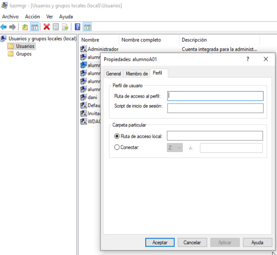

Usuarios y grupos Windows¶
Cuenta de usuario¶
Una cuenta de usuario se utiliza para:
Autentificar la identidad del usuario
Autorizar o denegar el acceso a los recursos
Administrar la seguridad
Auditar las acciones realizadas con la cuenta
Hay dos cuentas predefinidas: Administrador e invitado
Un usuario local es una cuenta a la que se pueden conceder permisos y derechos para el equipo donde se está creando la cuenta
Grupos¶
Se utilizan para poder asignar privilegios comunes a varios usuarios o equipos Hace más sencilla la administración
Un usuario puede pertenecer a varios grupos y tener los permisos asignados a cada uno de ellos
Hay ciertos grupos que se crean durante la instalación del sistema. Son las Identidades especiales
Ejecutamos el comando lusrmgr.msc

Un grupo local¶
Un grupo local es una cuenta a la que se pueden conceder permisos y derechos para el equipo donde se ha creado
Perfiles de usuario¶
Permite definir el entorno de trabajo de los usuarios en red El perfil local sólo es accesible desde el equipo donde se ha creado Un perfil temporal se crea cuando se produce un error en la carga del perfil de usuario, y se elimina al final de la sesión Se accede mediante la ficha Perfil de la pantalla de Propiedades del usuario:
Un perfil de usuario permite asignar scripts de inicio de sesión y rutas de acceso locales
Un script de inicio de sesión es un archivo con extensión .bat que contiene una secuencia de comandos que se ejecuta automáticamente cuando el usuario inicia una sesión.
Una ruta de acceso local es una ruta a un directorio local privado del usuario.
Es el directorio predeterminado en Símbolo de Sistema